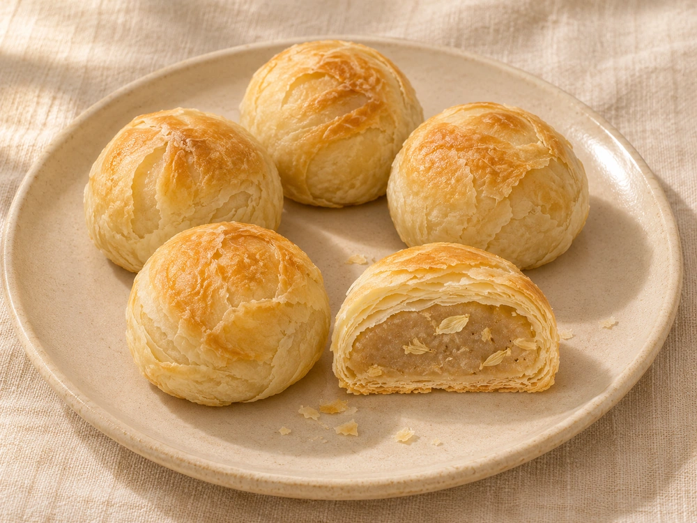

BLOOM TO TABLE
茉莉鲜花酥
以犍为鲜花饼产品为灵感，用食用茉莉花馅包入酥皮，烘成层层酥香的小点，让花香留在一口茶食里。
鲜花饼灵感 · 酥香茶点 · 日常做法参考
准备食材
- 成品酥皮约 240 克（8 小份）
- 已加工、标明食品用途的茉莉花馅料约 80—100 克
- 蛋液少许（刷表面，可不加）
制作步骤
- 按包装说明处理酥皮。检查馅料的品名、用途、保存条件与保质期，使用可直接用于烘焙的食用茉莉花馅。
- 将酥皮分成 8 份，每份放约 10—12 克馅料，收口捏紧，轻轻整理成圆形；不塞得过满，以免烤制时爆口。
- 收口朝下放在铺好烘焙纸的烤盘上，间隔摆放。喜欢金黄色表皮可薄刷一层蛋液。
- 按酥皮包装建议预热和烘烤；普通小份酥皮点心可参考约 190℃、20—25 分钟，并按实际大小和烤箱调整，烤至外皮金黄、层次熟透。稍放凉后食用。
犍为已有鲜花饼产品报道。本页以现成酥皮与食用馅料整理家常简化做法，不代表当地企业配方；没有可靠食用馅料时，不用观赏茉莉或自采鲜花代替。 用量可按人数与口味调整。